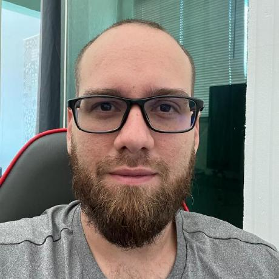
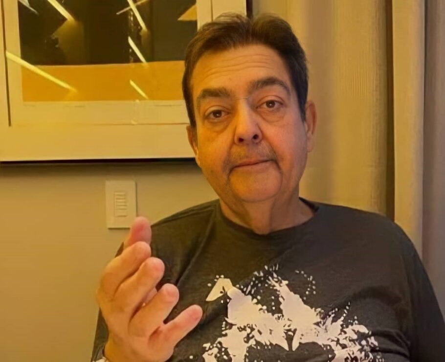

Aprenda online com os melhores cursos!
Escolha entre uma variedade de curso online e comece a aprender hoje mesmo.
Comece agoraNossos cursos populares

Curso de programação Python
Aprenda a criar sites incriveis com Python e seu Framework Django
Saiba maisSobre nós
Somos uma plataforma de educação online dedicada a fornecer cursos de altissima qualidade em várias áreas.A E-School surgiu como a plataforma online da Caelum a escola de tecnologia presencial do nosso ecossistema de empresas.
Depoimento dos Nossos Alunos
Caillou

Uma das coisas mais bacanas de estar desenvolvendo software no meu dia-a-dia, é o fato de estar sempre aprendendo alguma coisa nova. Por exemplo, todas as vezes que há um novo problema, uma mudança no sistema, uma nova funcionalidade e você sempre estará procurando a melhor forma de solucionar o problema, de evoluir o sistema sem que algo quebre ou fique bagunçado. Você já deve saber mas vou deixar claro: A gente não aprende as coisas simplesmente do nada, conhecimento não vem do além! Por isso leia, faça pesquisas, acompanhe blogs, sites e pessoas que postam sobre o que você tem interesse e também envolva-se: Aprenda com quem já sabe! E também com quem está aprendendo. Agora você me pergunta, como assim com quem está aprendendo? Eu não deveria simplesmente aprender com quem já sabe e domina? E de forma curta eu te respondo: Não. Sendo assim, vamos estender essa resposta. O por que do não em resposta da pergunta anterior eu também tive como resultado do envolvimento no forúm e vou explicar o que aconteceu. Quando iniciei na E-School, eu já era dev, tinha meus 3 à 4 anos de atuação e já havia desenvolvido vários projetos aqui na up, já havia feito cursos (como aluno e instrutor), lido livros e já estava no 7º semestre da faculdade (e ainda estou). Eu poderia ter ido direto para os cursos mais avançados, mas não, comecei pelos básicos e mesmo achando que aquilo não somaria em nada nos meus conhecimentos eu os fiz e disse para mim mesmo: Vou fazer esse curso aqui só para revisar, eu já sei disso. O que me impressionou? As dúvidas básicas no fórum em que eu não tinha certeza da resposta. Pois é, acabei aprendendo um monte de coisas “novas”. No vídeo, com o instrutor, que já domina o assunto, você aprende, faz os exercícios e absorve aquele conhecimento passado pelo instrutor. No fórum, você discute e vê problemas sobre a perspectiva de outras pessoas, problemas que talvez não tenham acontecido com você e que você pode ou não ter a resposta. Podemos chamar isso de: segunda parte do aprendizado. E esse segundo passo é muito importante para fixação e compreensão do assunto estudado, você pode estar ensinando e/ou aprendendo com mais alguém sobre determinado assunto sobre outra perspectiva que antes você não havia pensado. Se você é aluno da E-school, assim como eu, explore um pouco o fórum, caso tenha problemas, procure uma solução lá, caso não tenha, abra um tópico! Dessa forma, alguém que já sabe pode lhe mostrar no caminho das pedras para resolver seu problema ou alguém que está aprendendo pode entrar na discussão também e aprender porque aconteceu o problema e como resolver.
Fausto

Os cursos foram tão bons que meu coração quase não aguentou de tanta felicidade em aprender.Muito bom contar com a E-scholl para me tornar um desenvolvedor. Este curso foi muito bom, excelente no meu ponto de vista, abrange muita coisa, tira muitas dúvidas, abre um leque de amostragens detalhadas e mostradas com videos de cada doença, para não ficar nenhuma dúvida mesmo; é só ler, prestar muita atenção e se ficou com dúvidas, é só reler novamente, pois com certeza não restará dúvídas alguma sobre o curso.
Lais
Graças aos cursos da E-School, eu consegui o meu primeiro emprego remoto como dev e consigo trabalhar e cuidar da minha filha pequena. Tirei esse grande peso da minha vida. Vale muito a pena, os cursos além de serem muito bons, para quem tem deficiência como eu, ele é super acessível.
Entre em contato
Tem alguma dúvida ou sugestão, entre em contato conosco:
Tel.:(61)9876-5432